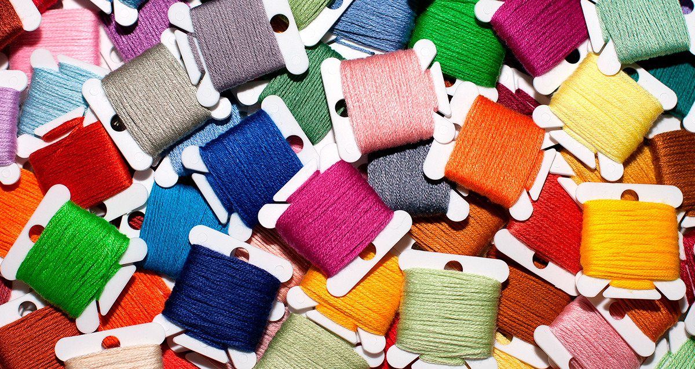
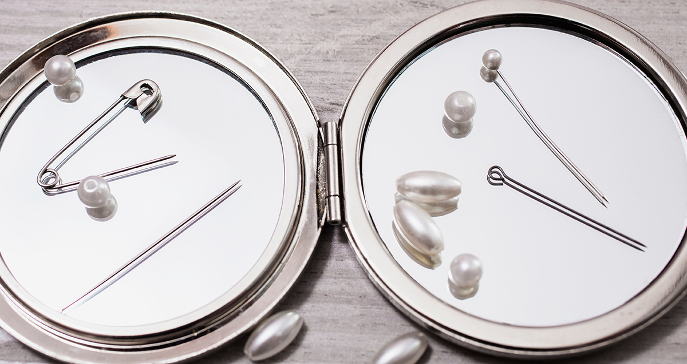
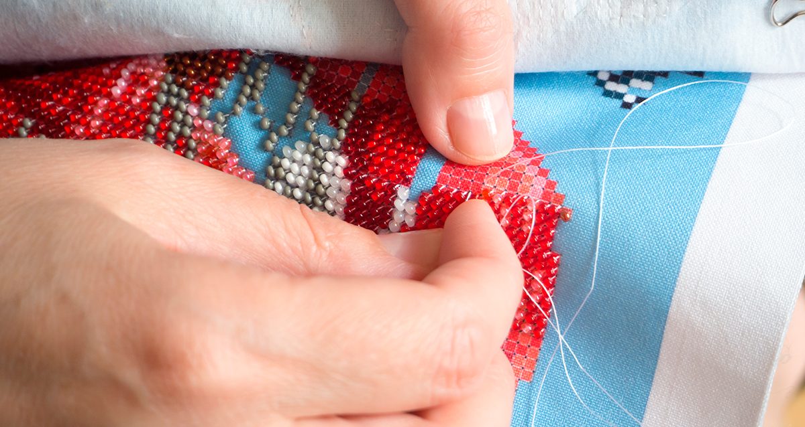
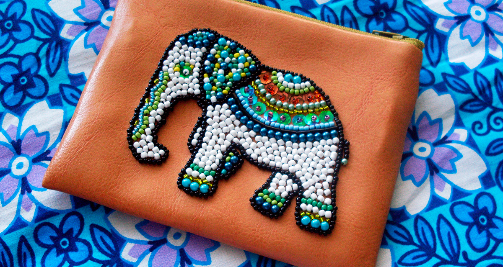

Вышивать бисером — это приятное, полезное и совсем нетрудное занятие. За один вечер можно изготовить что-то действительно уникальное для себя и друзей. В дореволюционной Руси вышивка бисером была популярна у знати. С помощью нее украшали одежду, а также создавали иконы, изображали на ткани церкви и природу. Сегодня смелые любители хенд-мейда украшают бисером джинсы, блузки, сумки, чехлы для мобильных телефонов и многое другое. Если и ты не прочь добавить оригинальности своим вещам и задаешься вопросом: как вышивать бисером? То читай в нашей статье о том, с чего начать, и какие основные приемы существуют.
Что купить?
В специализированных магазинах уже продаются наборы для вышивания бисером, которые как нельзя кстати подойдут для новичка. Там ты найдешь правильные нитки, иглы, специальные схемы для работы, канву, бисер нескольких цветов и пяльца для того, чтобы натянуть полотно. Но неплохо бы уметь придумывать идеи и подбирать материалы самостоятельно!
Бисер
Бисер в некоторых магазинах можно приобрести по весу. Чтобы не покупать лишнего, ты можешь предварительно подсчитать необходимое количество бусинок по схеме: в одном грамме около 50 бусин. Чтобы рисунок на канве имел нужный вид, нужно подбирать бисер одного диаметра и меньше занимаемой площади. Для вышивки обычно используются керамические и стеклянные бусины различных цветов, которые имеют удобные отверстия. Керамический бисер состоит из прочного, не теряющего цвета материала, стеклянный бисер всегда прозрачный.
Нитки
Важность ниток невозможно переоценить. Для вышивки бисером идеально подойдут специальные хлопковые или шелковые нити. Их важность в том, что они не растянутся во время работы, не порвутся и не сотрутся со временем. Также можно присмотреться к полиэстеровым нитям и нитям с восковой пропиткой. Если вышивка однотонная, то цвет ниток следует подбирать к цвету ткани или бисера.
Иглы
Для того, чтобы было легко вышивать бисером, необходимо приобрести острую, тонкую и с маленьким диаметром иглу, имеющее маленькое ушко. В противном случае продевать бусинки будет затруднительно. В специализированных магазинах или интернет-магазинах размер игл для вышивания бисером обычно обозначают под номером 12. Такие иглы могут гнуться и часто ломаются, поэтому закупай их целыми наборами по несколько штук.
Вот несколько советов, как без труда вставить в такие иглы нитку:
- Окуни нить кончиком в прозрачный лак для ногтей, после протри салфеткой и дай просохнуть. После высыхания ты с легкостью вставишь нить в тонкую иглу.
- Если ты используешь нейлоновую нить, аккуратно подпали ее кончик.
Ткань
Ткань для такого вида вышивки подойдет как с нанесенным рисунком, так и с очерченными клетками, образовавшимися за счет скрещения нитей. Для правильного натяжения канвы, можешь ее открахмалить или помазать специальным сиропом. Чтобы его приготовить, залей сахар небольшим количеством воды. Должна получиться вязкая кисельная жидкость. Льняную или хлопковую канву используй как основу для вышивки, не удаляя ее впоследствии. Синтетическая канва подойдет для вышивки бисером на одежде. После работы канву выдергивают по нитям. Если вышивка будет производиться на ворсистой ткани, то канву необходимо использовать с изнаночной стороны. В итоге, бусины будут пришиты на лицевой части, а благодаря канве, ты сможешь сохранить ровный правильный рисунок. По окончанию работы канва не должна удаляться.
Выбери свою технику вышивания
Если ты только учишься вышивать, начинай это приятное дело вместе с канвой. Эта техника вышивания бисером имеет тот же принцип, что и при обычном вышивании крестиком, только вместо крестика из нитки – бусинка, которая занимает одну клетку на канве и пришивается по диагонали стежком от правой нижней клетки к верхней левой. Важно, чтобы размер бисера совпадал с размером клетки на канве.
Также существует художественная техника нанесения вышивки. Она подходит уже тем, кто сумел вышить не один рисунок на канве. Мастер сначала наносит рисунок на ткань с помощью кальки. Далее бисером обшивает контур рисунка, элементарным швом «иглой вперед», которому всех учат в школе.
Соблюдай правила при вышивании бисером
- Начинай вышивать с центра полотна. Главные детали изображения располагаются строго в середине полотна, а остальные вокруг. Бисер должен быть уложен строго ровно и с правильным наклоном.
- Вышивка выполняется рядами. Для того, чтобы нитки в иголке хватило на весь ряд, возьми длину в 5 раз больше ширины канвы.
- Число бусин = числу клеток на схеме. Обрати внимание, что схемы для вышивания крестиком идеально подходят для вышивания бисером.
Виды швов для вышивки бисером
Аккуратную работу видно сразу. Неряшливые стежки и мелкие ошибки могут свести на нет все твои старания. Но не стоит бояться! Просто ознакомься с распространенными видами швов, и ты не допустишь ошибок.
Монастырский шов
Данный шов очень напоминает технику вышивания крестиком — стежки следуют друг за другом по диагональной линии, где используется одна бусинка. Как правильно вышивать монастырским швом:
- В выбранном месте закрепи нить, на нее продень бусину.
- Выводи иглу по диагонали, вверх или вниз на непосредственно лицевую часть.
- Продолжай нанизывать бусинки, повторяя ряд.
- Чтобы переместиться на следующий ряд, необходимо с изнаночный стороны установить иглу в необходимой точке, затем продолжай работать по схеме.
Строчный шов
Этот шов вышивания бисером похож на шов «назад иголкой». Как правильно вышивать строчным швом:
- На лицевой стороне своей работы выведи иглу, расположи ее между первыми двумя значками схемы.
- Теперь надень нужную бусину и выведи наизнанку перед первым значком.
- Сделай стежок на изнанке, теперь выведи между вторым и третьим значком.
- На лицевой стороне работы выведи иглу с надетой бусинкой в точку между первыми двумя значками.
- Продолжай работать таким образом по схеме.
Стебельчатый шов
Этот шов плотнее предыдущих, так как по технологии бусинка прошивается два раза. Как правильно вышивать стебельчатым швом:
- Закрепи нить, продень бисеринку, введи иглу в ткань и выведи за пришитым бисером.
- Повторно проведи выведенную нить через пришитый бисер и надень на нее новую бусинку.
- Введи иглу позади последней бисеринки, которую ты надела, и снова выведи.
- Пропусти нить через вторую бусину, затем нанизывай третью. Нить вновь должна уйти наизнанку и выйти между второй и третьей бусиной.